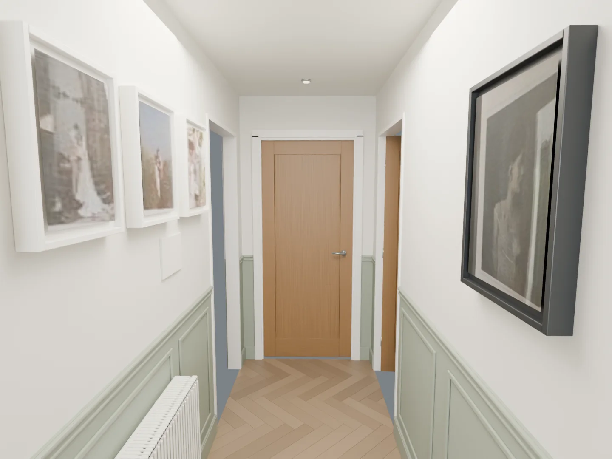
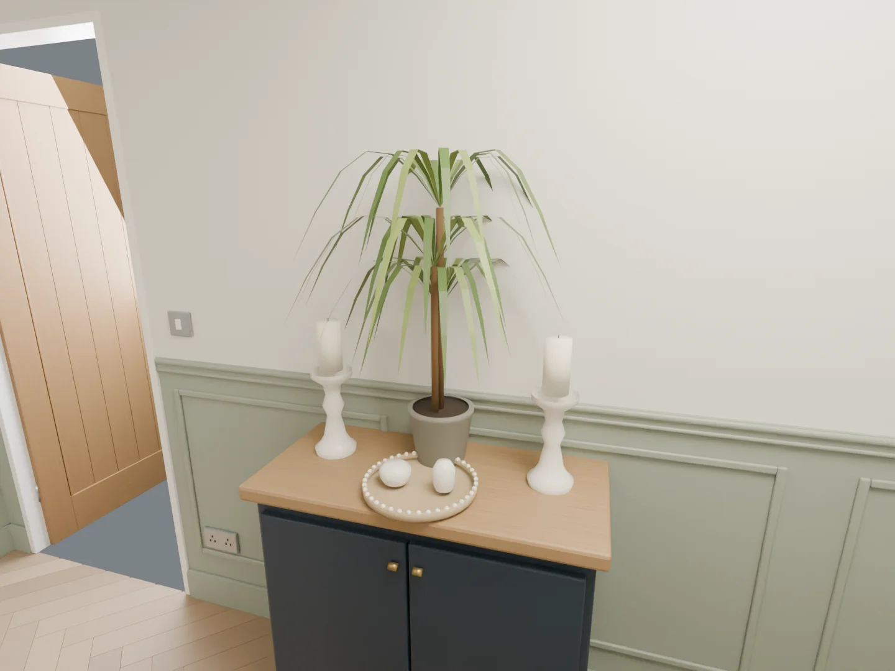
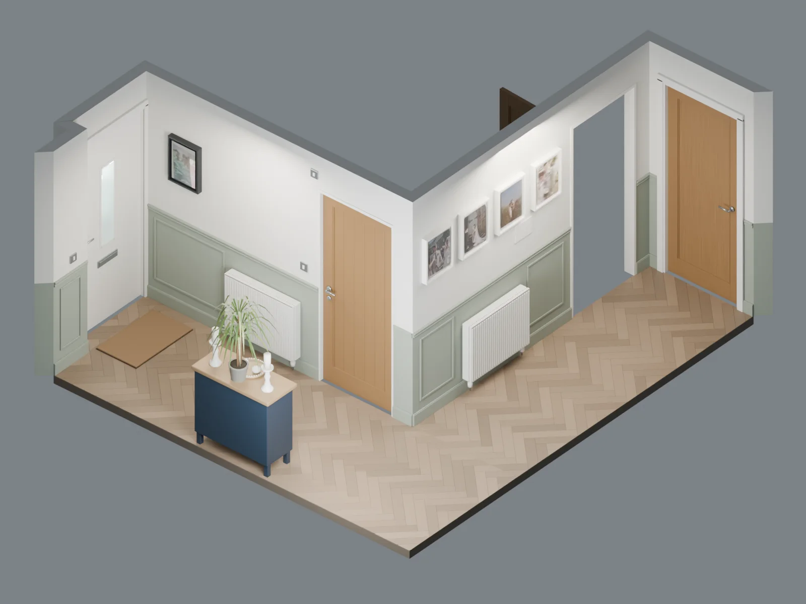
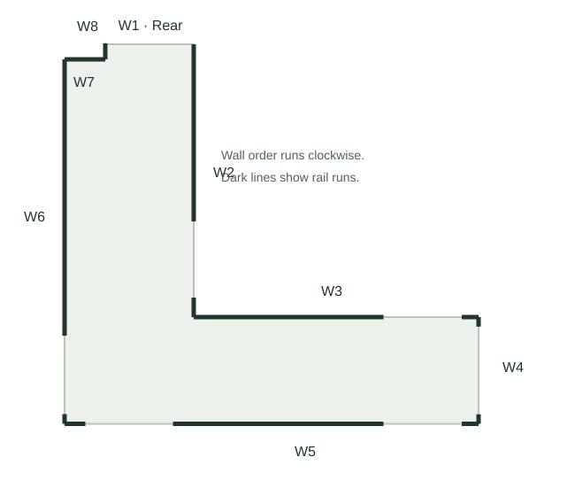

Fine moulded frames
Slim picture frames. A shaped dado.
Ten frames need 40 accurately cut pieces and 40 mitred joints. No backing sheet is needed.



Design preview: the renders use an earlier skirting estimate. The schedules below use the corrected 90 mm height.
What you need
Fine rectangular mouldings add detail without covering the wall. A shaped dado gives the design a more traditional finish.
| Material / section (mm) | Buy | Allowance |
|---|---|---|
| Panel mould, about 22 wide × 11 deep | 14 × 2400 mm lengths | 13 used, 1 spare. Installed length: 27.332 m. |
| Shaped dado, about 50 high × 19 deep | 6 × 2440 mm lengths | 5 used, 1 spare. Installed length: 11.445 m. |
Paint, adhesive and tools
| Supply | Planning allowance |
|---|---|
| Construction adhesive, 290–310 ml | 5–6 cartridges |
| Decorators caulk | 2–3 cartridges |
| Fine filler | 1 small tub |
| MDF / timber primer | 1 litre |
| Coloured topcoat, two coats | About 3 litres |
| Other supplies | Abrasives, masking tape, dust sheets and suitable temporary fixings |
Coverage depends on the product and wall condition. The paint allowance uses about 12.5 m², two coats and 20% extra. Use compatible wall and trim finishes. Tools include a tape, level, square, saw, mitre guide, adhesive gun and sanding tools; grooved sheets also need a guided saw and cutout templates.
Lengths and cuts
All dimensions below are in millimetres. Nominal sizes are intended finished sizes before corner details and site variation. Check the wall ends and profile samples before making final cuts.
| Frame | Left edge (mm) | 2 horizontal cuts (mm) | 2 vertical cuts (mm) |
|---|---|---|---|
| W2a-F1 | 95 | 815 | 705 |
| W3a-F1 | 95 | 460 | 705 |
| W3a-F2 | 1,550 | 500 | 705 |
| W5b-F1 | 1,161 | 629.3 | 705 |
| W5b-F2 | 1,950.3 | 629.3 | 705 |
| W5b-F3 | 2,739.7 | 629.3 | 705 |
| W6b-F1 | 1,060 | 810 | 705 |
| W6b-F2 | 2,020 | 920 | 705 |
| W6b-F3 | 3,090 | 935 | 705 |
| W7a-F1 | 86 | 288 | 705 |
Wall key and all dado lengths 11.445 m total
All three options use these 13 wall-face runs. Apply the schedule once for each continuous rail or cap part. W1 is the rear door and has no rail.

| Run | Wall section | Length (mm) |
|---|---|---|
| W2a | Bathroom wall | 2,000 |
| W2b | Bathroom wall | 220 |
| W3a | Wedding-photo wall | 2,145 |
| W3b | Wedding-photo wall | 190 |
| W4a | Storage wall | 107.5 |
| W4b | Storage wall | 107.5 |
| W5a | Entrance and spare-bedroom wall | 190 |
| W5b | Entrance and spare-bedroom wall | 2,380 |
| W5c | Entrance and spare-bedroom wall | 235 |
| W6a | Kitchen and cabinet wall | 110 |
| W6b | Kitchen and cabinet wall | 3,120 |
| W7a | Rear boxing face | 460 |
| W8a | Rear recess return | 180 |
W4a and W4b assume the 990 mm storage frame is centred in the 1205 mm end wall. The 3120 mm W6b run needs a joint when using 2440 mm stock; allow two 1560 mm nominal pieces.
Stock cutting schedule Rough blanks in mm
These blanks include trimming allowance. They are not the final cut sizes. Keep every piece labelled. The schedule allows 3 mm saw loss per cut.
| Stock / row | Blank labels and lengths (mm) | Left over (mm) |
|---|---|---|
| 1 | W6b-F3H1: 965 + W6b-F3H2: 965 + W7a-F1H1: 318 | 133 |
| 2 | W6b-F2H1: 950 + W6b-F2H2: 950 + W7a-F1H2: 318 | 163 |
| 3 | W2a-F1H1: 845 + W2a-F1H2: 845 + W5b-F1H1: 660 | 31 |
| 4 | W6b-F1H1: 840 + W6b-F1H2: 840 + W5b-F1H2: 660 | 41 |
| 5 | W2a-F1V1: 735 + W2a-F1V2: 735 + W3a-F1V1: 735 | 176 |
| 6 | W3a-F1V2: 735 + W3a-F2V1: 735 + W3a-F2V2: 735 | 176 |
| 7 | W5b-F1V1: 735 + W5b-F1V2: 735 + W5b-F2V1: 735 | 176 |
| 8 | W5b-F2V2: 735 + W5b-F3V1: 735 + W5b-F3V2: 735 | 176 |
| 9 | W6b-F1V1: 735 + W6b-F1V2: 735 + W6b-F2V1: 735 | 176 |
| 10 | W6b-F2V2: 735 + W6b-F3V1: 735 + W6b-F3V2: 735 | 176 |
| 11 | W7a-F1V1: 735 + W7a-F1V2: 735 + W5b-F2H1: 660 | 251 |
| 12 | W5b-F2H2: 660 + W5b-F3H1: 660 + W5b-F3H2: 660 | 401 |
| 13 | W3a-F2H1: 530 + W3a-F2H2: 530 + W3a-F1H1: 490 + W3a-F1H2: 490 | 338 |
| Stock / row | Blank labels and lengths (mm) | Left over (mm) |
|---|---|---|
| 1 | W5b: 2,410 | 17 |
| 2 | W3a: 2,175 + W3b: 220 | 29 |
| 3 | W2a: 2,030 + W2b: 250 + W4a: 138 | 3 |
| 4 | W6b-1: 1,590 + W7a: 490 + W6a: 140 + W4b: 138 | 60 |
| 5 | W6b-2: 1,590 + W5c: 265 + W5a: 220 + W8a: 210 | 133 |
Linear MDF and mould blanks allow 30 mm extra per piece and 10 mm stock-end trimming. The 2400 mm cap schedule allows 10 mm extra per piece and only 5 mm stock-end trimming. Check stock lengths first and use the spare if needed. Corner projections and actual wall angles set the final end cuts.
Fit it to the room
- Select a physical moulding sample before cutting. One shaped dado replaces the small profile layers shown in the render.
- Set the frame bottoms at 185 mm and their tops at 890 mm above the floor. The dado starts at 950 mm.
- Frame cuts are measured from outside long point to outside long point. Do not subtract the moulding width. Both ends are mitred.
- Keep the wall behind each radiator plain. Check nearby frame positions against the valves and pipes. Dry-fit one complete frame first.
- Left-edge positions in the table are measured from the clockwise start of the whole numbered wall. Decimal sizes come from the layout; set equal frame widths on site.